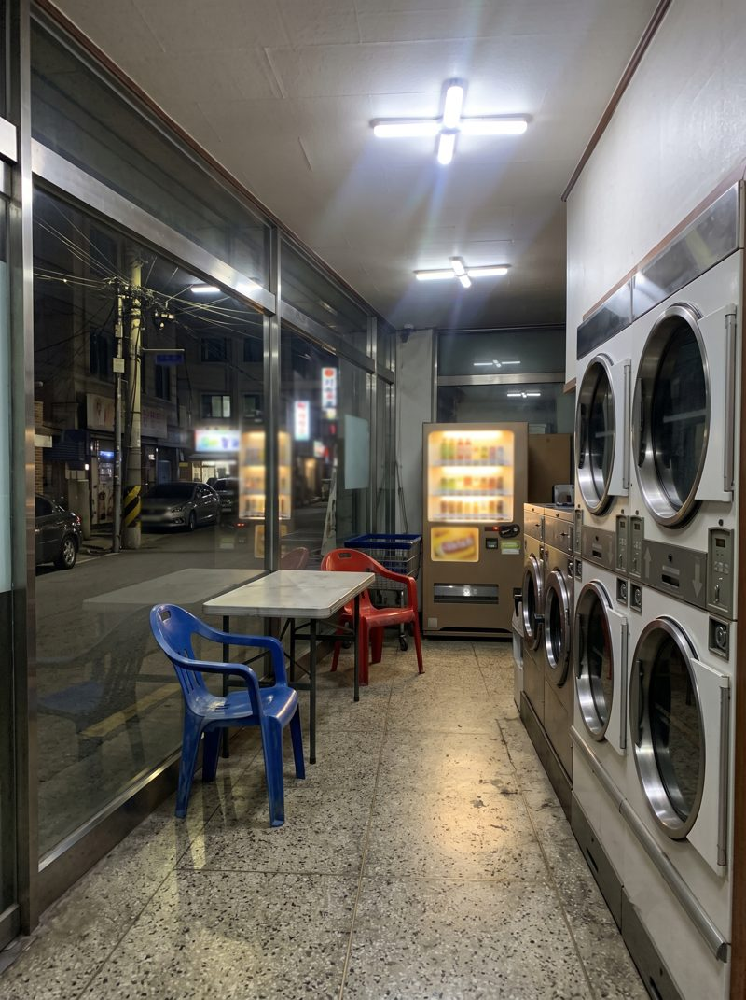
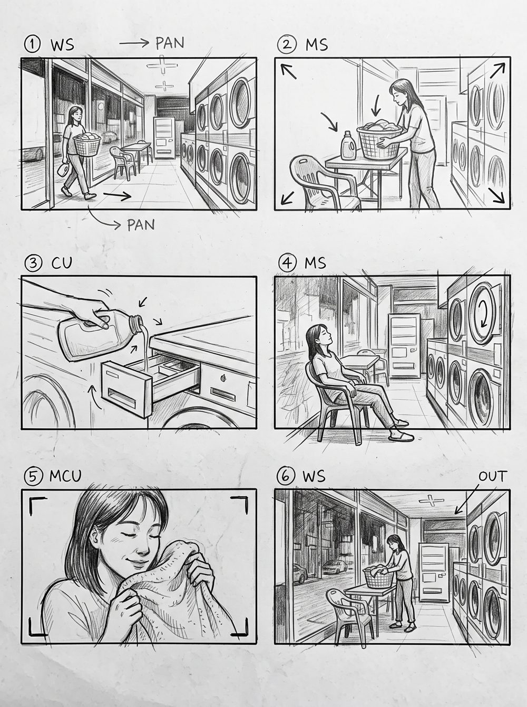
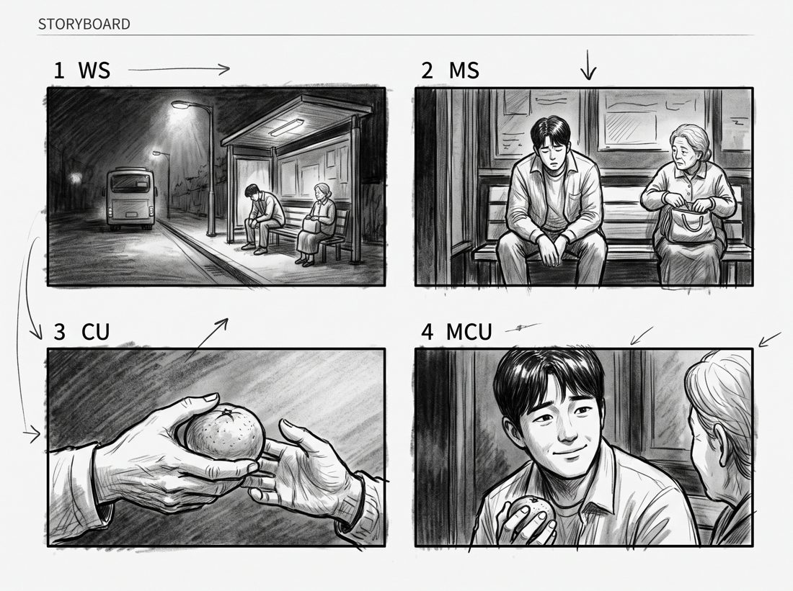
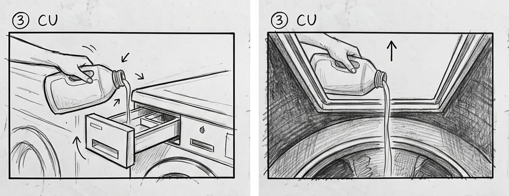

헌팅 사진 → 콘티 → 한 컷 수정 → 샷 리스트까지. 전부 무료 제미나이로 직접 돌려본 결과예요.
한눈에
준비물: 제미나이(gemini.google.com) 무료 계정 + 장소 사진 1장(없어도 돼요)
프롬프트는 [ ] 부분만 바꿔서 복사 버튼으로 붙여넣으세요
고칠 땐 새 창 말고 같은 대화창에서 이어서 말하세요
결과는 회의용 초안이에요. 감독·촬영감독과 맞춰보는 출발점
이렇게 나와요
폰으로 찍은 빨래방 사진 한 장을 올리고 ① 프롬프트를 붙였더니 30초 안팎에 아래 콘티가 나왔어요. 세탁기·자판기·창문 위치가 그대로 살아 있어요.

올린 사진 (헌팅 때 폰으로 찍은 느낌)

나온 콘티 · 6컷, 2칸 × 3줄
① 사진 → 콘티
대화창 왼쪽 + 버튼으로 사진을 올린 뒤 붙여넣으세요.
프롬프트
이 사진 속 장소에서 찍는 [30초짜리 광고] 콘티를 그려줘. [6]컷, 가로 [2]칸 × 세로 [3]줄 스토리보드 한 장. 흑백 연필 스케치 느낌, 칸마다 16:9 프레임. 등장인물은 [20대 여성 한 명]. 칸 위에는 컷 번호와 샷 사이즈만 영어로 짧게(예: 1 WS, 2 MS, 3 CU), 카메라 움직임은 화살표로. 사진 속 구도·소품을 그대로 살려줘. 긴 문장이나 한글 글자는 넣지 마.
[ ] 바꿀 곳
이렇게 바꿔 쓰세요
무엇을 찍나
뮤직비디오 도입부 / 브이로그 오프닝 / 단편영화 3씬
컷 수·배열
4컷 2×2 / 9컷 3×3 (9컷 넘으면 두 장으로 나눠 요청)
인물
30대 남성 두 명 / 인물 없음 / 빨간 후드티 입은 여성
그림 느낌
흑백 연필 스케치 / 마커 컬러 / 단순 선화
② 사진이 없을 때: 줄거리만으로
장소 사진이 없으면 장면을 한두 문장으로 적어도 돼요. 누가·어디서·무엇을 하는지만 들어가면 충분해요.
프롬프트
사진 없이 줄거리만으로 콘티를 그려줘. 장면: [밤 버스정류장, 막차를 놓친 20대 남성이 벤치에 앉아 한숨 쉬다가 옆자리 할머니가 건넨 귤을 받고 웃는다]. [4]컷, 가로 [2]칸 × 세로 [2]줄 스토리보드 한 장. 흑백 연필 스케치 느낌, 칸마다 16:9 프레임. 칸 위에는 컷 번호와 샷 사이즈만 영어로 짧게(예: 1 WS, 2 MS), 카메라 움직임은 화살표로. 와이드부터 클로즈업까지 샷 사이즈를 섞어줘. 긴 문장이나 한글 글자는 넣지 마.

줄거리만 넣고 나온 4컷 · 와이드 → 미디엄 → 귤 건네는 손 클로즈업 → 웃는 얼굴
③ 한 컷만 고치기
마음에 안 드는 컷만 번호로 콕 집어 말하면 나머지는 그대로 두고 다시 그려줘요. 꼭 같은 대화창에서 이어서 말하세요. 새 창을 열면 처음부터 다시 그려요.
프롬프트
아까 그린 콘티에서 [3]번 컷만 바꿔서 다시 그려줘. [3]번은 [세탁기 안쪽에서 투입구를 올려다보는 시점으로, 손과 유연제 용기가 화면 위쪽에 보이게]. 나머지 컷은 그대로 두고, 같은 흑백 연필 스케치·같은 배열로.

왼쪽 처음 3번 컷 → 오른쪽 수정된 3번 컷 (나머지 5컷은 그대로 유지됐어요)
"5번 컷 인물을 화면 왼쪽으로 옮겨줘"
"2번과 3번 순서를 바꿔줘"
"전체를 마커 컬러로 다시 칠해줘"
"글자가 깨졌어. 컷 번호만 남기고 글자는 빼줘"
④ 콘티 → 샷 리스트 표
콘티를 그린 대화창에서 이어서 붙이면 촬영용 표로 바꿔줘요. 촬영 순서까지 묶어서 제안해줘서 회의 자료로 바로 쓰기 좋아요.
프롬프트
방금 그린 콘티를 촬영용 샷 리스트 표로 정리해줘. 열은 컷 번호 / 샷 사이즈 / 앵글 / 카메라 움직임 / 화면 내용 / 필요한 소품 / 예상 길이(초). 마지막에 총 길이 합계와, 같은 자리에서 묶어 찍을 수 있는 촬영 순서도 한 줄로 제안해줘.
④에서 실제로 받은 결과
실제로 받은 결과 중 일부예요(총 30초). 제안된 촬영 순서는 「1 → 2 → 6 → 4 → 5 → 3」, 같은 방향 세팅끼리 묶은 순서였어요. 다만 이번 결과에도 '달리고(Dolly-in)' 같은 오타가 섞여 있었어요. 표는 한 번 훑어보고 쓰세요.
컷
샷·움직임
내용 (길이)
1
WS · 팬
바구니 들고 들어오는 여성 (6초)
2
MS · 줌 인
테이블에 짐 내려놓기 (4초)
3
CU · 고정
투입구에 유연제 붓는 손 (5초)
4
MS · 고정
의자에 앉아 쉬는 여성 (6초)
5
MCU · 달리 인
세탁물 향 맡으며 미소 (5초)
6
WS · 줌 아웃
짐 챙겨 나가는 뒷모습 (4초)
콘티에 쓰는 약어
약어
뜻
EWS · WS
아주 넓게 · 넓게. 장소와 인물 위치를 보여줘요
FS
인물 전신이 다 들어오는 샷
MS · MCU
허리 위 · 가슴 위
CU · ECU
얼굴이나 물건을 크게 · 눈·손끝처럼 더 크게
OTS
인물 어깨 너머로 상대를 보는 샷
POV
인물이 보는 시점
INSERT
손·소품 같은 디테일 컷
PAN · TILT
카메라는 제자리, 좌우 · 위아래로 돌리기
DOLLY · TRACK
카메라가 앞뒤로 · 옆으로 직접 이동
ZOOM
카메라는 그대로, 렌즈로 당기거나 밀기
HANDHELD
손으로 들고 찍기
잘 나오게 하는 팁
컷 수와 배열은 숫자로 정해 주세요(6컷, 2×3)
그림 속 한글은 깨지기 쉬워요. 라벨은 영어 약어로 짧게
인물 옷 색을 정해두면(예: 빨간 후드티) 컷마다 같은 사람처럼 나와요
사진은 소품이 잘 보이게, 너무 어둡지 않게 찍은 걸 쓰세요
한 번에 9컷이 넘으면 칸이 작아져요. 씬별로 나눠서 요청하세요
AI 콘티를 믿으면 안 되는 부분
실제 렌즈 화각·동선과 다를 수 있어요. 헌팅 때 뷰파인더로 다시 확인하세요
손가락, 글자, 기계 버튼 같은 디테일은 자주 틀려요
컷 사이 옷·소품 연결이 어긋날 수 있어요
샷 리스트의 길이(초)는 AI 추정치예요
체크리스트
사람 얼굴이 크게 나온 사진이라면 올려도 되는지 확인했나요?
클라이언트 제출물에 AI 그림을 그대로 넣어도 되는지 회사·클라이언트 정책을 확인했나요?
촬영 허가가 필요한 장소인지 따로 확인했나요?
AI 콘티를 감독·촬영감독과 맞춰볼 시간을 잡았나요?
안내 · 이 문서의 예시는 2026년 10월 무료 제미나이로 직접 생성한 결과예요. 무료 사용 범위와 기능은 바뀔 수 있고, 같은 프롬프트라도 결과는 매번 조금씩 달라요. AI 콘티는 회의용 초안이에요. 실제 촬영 계획은 연출·촬영팀과 함께 정하세요.